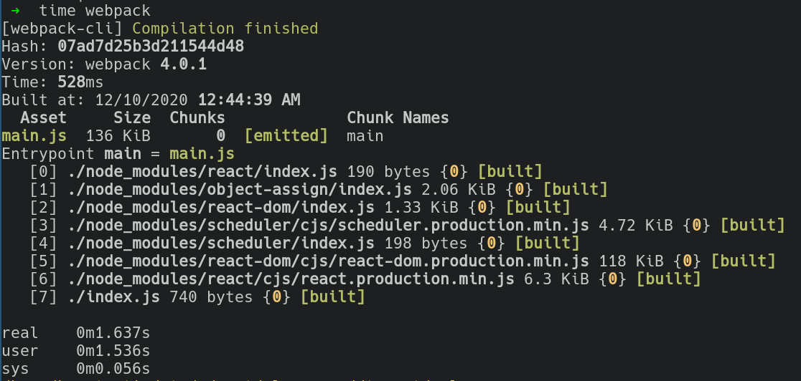
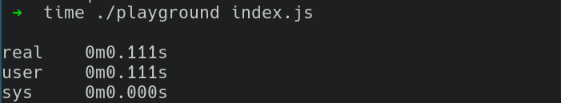

MYOX: Javascript bundler
Preface🔗
Have you heard/used Webpack, Babel? Wanted to understand the basic ideas behind them?
In this blog post I'm going to create Javascript bundler and demonstrate how things like Babel can be leveraged there. But we won't use Babel. In Rust ecosystem we have our own Babel which is called swc.
Final goal🔗
Firstly let's determine our final goal.
Our goal is to write Javascript bundler which can bundle basic React hello world application:
// index.js
import * as React from 'react';
import * as ReactDOM from 'react-dom';
class Hello extends React.Component {
render() {
return React.createElement('div', null, `Hello ${this.props.toWhat}`);
}
}
ReactDOM.render(
React.createElement(Hello, {toWhat: 'World'}, null),
document.getElementById('root')
);
The bundle process should be like:
cargo run <path_to_entry.js_file> ## it will produce out.js file
Produced out.js we will include in index.html:
<body>
<div id="root"></div>
<script src="./out.js"></script>
</body>
And open that file in a browser.
Roadmap🔗
In order to achieve the final goal our journey will be splitted into several steps:
- getting familiar with swc
- implement Javascript bundler which can bundle our local Javascript files without any external node_modules used
- add an ability to import external packages from node_modules folder and bundle all that stuff together
Initial setup🔗
Since we are going to run our application as the end user our application will be a binary:
cargo new --bin js-bundler
Now let's add needed dependencies(cargo add is used here):
# flexible Results/Errors
cargo add anyhow
# common swc entities
cargo add swc_common
# parsed javascript nodes types
carg add swc_ecma_ast
# transform esmodules to commonjs
cargo add swc_ecma_codegen
cargo add swc_ecma_transforms
# traverse ast
cargo add swc_ecma_visit
# generate unique identifiers for modules
cargo add uuid --featuers v4
# store tmp js files for testing
cargo add -D tempfile
All project I'm going to write in one src/main.rs file.
// all used modules
use anyhow::Result;
use std::{
collections::{HashMap, HashSet},
env, fs, io,
io::{ErrorKind, Write},
path::PathBuf,
rc::Rc,
sync::Mutex,
};
use swc_common::{sync::Lrc, Globals, Mark, SourceFile, SourceMap, GLOBALS};
use swc_ecma_ast::{
AssignExpr, CallExpr, Expr, ExprOrSpread, ExprOrSuper, ExprStmt, Ident, Lit, Module,
ModuleDecl, ModuleItem, Stmt, Str,
};
use swc_ecma_codegen::{text_writer::JsWriter, Emitter};
use swc_ecma_parser::{lexer::Lexer, JscTarget, Parser, StringInput, Syntax};
use swc_ecma_transforms::modules::common_js::common_js;
use swc_ecma_visit::{noop_visit_type, Fold, Node, Visit, VisitWith};
use uuid::Uuid;
Implementation🔗
Before coding let's discuss the main idea which will be used to create a bundler.
While working with Nodejs do you notice that famous require function? Basically when we need to import other module we call require function for that.
The most important part that it's a function. And how a functions resolution does work? Ask yourself what will we see in the following scenarios:
// panics in the browser because require is undefined
// because window.require is undefined
// i.e. we are trying to find it
// in the global context
require("./foo.js");
window.require = 'not important';
function bar(require) {
// our window.require
// won't affect us
// because require==function arg
// will be used
let foo = require("./foo.js");
}
const modules = {'./foo.js': (module) => {/*module src like*/module.exports = {a: 1}}};
bar((path) => {
const module = {};
modules[path](module);
return module.exports;
}
So we can "overwrite" require and place there src of the required module. We will do that not exactly the same as in the example above and touch that in more detail in the future. Now our purpose is to understand the basic idea which will be used.
But now is 2020 and I want to write a code with esmodules, not with commonjs.
In order to solve that problem we need to somehow transform our esmodules based code into commonjs based and only after that bundle the project.
And here Babel, swc are used. Since we are in Rust ecosystem swc will be used.
In order to convert esmodule to commonjs module we need to parse file and choose an appropriate strategy into which format we want to convert it.
Enough talking, it's time to begin writing the code.
Let's create some test infrastructure. We need to create js files and store them somewhere. For that tempfile crate will be used:
#[cfg(test)]
mod test {
use super::*;
use std::fs::read_to_string;
use std::fs::File;
use std::io::Write;
use std::process::Command;
use std::thread::sleep;
use std::time::Duration;
use tempfile::{tempdir, TempDir};
fn create_tmp_file() -> (File, PathBuf, TempDir, String) {
let dir = tempdir().expect("temdir is created");
let (file, file_path, name) = create_tmp_file_with_dir(&dir);
(file, file_path, dir, name)
}
fn create_tmp_file_with_dir(dir: &TempDir) -> (File, PathBuf, String) {
let name = format!("{}{}", Uuid::new_v4().to_hyphenated().to_string(), ".js");
let file_path = dir.path().join(&name);
let mut file = File::create(&file_path).unwrap();
(file, file_path, name)
}
}
Now we have all needed in order to think about parsing:
#[test]
fn successful_parsing() {
let (mut file, file_path, dir, _) = create_tmp_file();
writeln!(file, "import {{foo}} from './foo.js';").unwrap();
let parsed_module = get_parsed_module(&file_path, &init_source_map());
assert_eq!(parsed_module.unwrap().body.len(), 1);
}
As you can I we want to path file path like index.js and receive a parsed module. By parsed I mean the module which is represented by AST - basically just a model of our source code represented by Rust building blocks. For curious people - you can print that AST in a neat form and explore it if you want. We will touch that AST in a few minutes.
In order to get parsed module firstly we need to receive a lexer - a tool which knows how to split our code into lexemes. I wrote more about that in that post. In order to create a lexer we need to pass it our source code. And only after that we can achieve a parser which can parse a file. Do you see that chain?:
- source -> lexer -> parser -> parsed module
So the shape of our function is something like that:
fn get_parsed_module<'a>(file_path: &PathBuf, sm: &Lrc<SourceMap>) -> Result<Module> {
// receiving a source file
let lf = load_file(&sm.clone(), &file_path.clone())?;
// init lexer
let lexer = init_lexer(&lf);
// init parser
let mut parser = init_parser(lexer);
parser
.parse_module()
.map_err(|e| anyhow::Error::msg(format!("error during module parsing: {:?}", e)))
}
Let's begin from the receiving a source file:
// source map is swc data structure which represents source file
// (its name, path, number of lines, etc)
// Lrc it's swc's alias to Arc
pub fn init_source_map() -> Lrc<SourceMap> {
Default::default()
}
pub fn load_file(sm: &SourceMap, path: &PathBuf) -> Result<Lrc<SourceFile>, io::Error> {
// sm offers api with which we can read a file
if path.is_dir() {
// we can pass a dir
// instead of a concrete file
// in such a case we will lookup for a index.js
// inside that dir
sm.load_file(&path.join("index.js"))
} else {
let path_as_str = path
.to_str()
.ok_or(format!("pathbuf: {:?} to str converted", &path))
.map_err(|e| std::io::Error::new(ErrorKind::Other, e))?;
if !path_as_str.ends_with(".js") {
sm.load_file(&PathBuf::from(format!("{}.js", path_as_str)))
} else {
sm.load_file(path)
}
}
}
Now lexer initialization - just calling swc factory:
pub fn init_lexer<'a>(input_file: &'a Lrc<SourceFile>) -> Lexer<'a, StringInput<'a>> {
Lexer::new(
// we are going to parse javascript
Syntax::Es(Default::default()),
// supported standart
JscTarget::Es2015,
StringInput::from(&**input_file),
None,
)
}
The same with swc parser:
pub fn init_parser<'a>(lexer: Lexer<'a, StringInput<'a>>) -> Parser<Lexer<'a, StringInput<'a>>> {
Parser::new_from(lexer)
}
Now we can run our first test, see that it's passed and move on.
With parser we are ready for a transpilation step - transpile ecmamodules to commonjs modules.
This is how we are going to do it - implement a dedicated function for that:
#[test]
fn transpiles_module() {
let (mut file, file_path, dir, _) = create_tmp_file();
writeln!(file, "import {{foo}} from './foo.js';").unwrap();
let sm = init_source_map();
let src = js_to_common_js(get_parsed_module(&file_path, &sm).unwrap().body, sm);
let u_src = src.unwrap();
assert_eq!(
u_src,
r#""use strict";
var _fooJs = require("./foo.js");
"#
)
}
And the implementation:
fn js_to_common_js(module: Vec<ModuleItem>, sm: Lrc<SourceMap>) -> Result<String> {
// scoped thread-local storage
// reduces memory usage
// need to set for swc in order to avoid panic
GLOBALS.set(&Globals::new(), || {
let transpiled_module = transpile_module_to_common_js(module);
let write_to = Output(Rc::new(Mutex::new(vec![])));
emit_source_code(transpiled_module, sm, write_to.clone())?;
let src = &*write_to.0.lock().expect("not poisoned");
Ok(std::str::from_utf8(src)?.to_string())
})
}
fn transpile_module_to_common_js(module: Vec<ModuleItem>) -> Vec<ModuleItem> {
common_js(
// a mark is a unique id associated with a macro expansion.
Mark::fresh(Mark::root()),
// how transform
swc_ecma_transforms::modules::util::Config {
no_interop: true,
..Default::default()
},
)
.fold_module_items(module)
}
fn emit_source_code<W: Write>(
module: Vec<ModuleItem>,
sm: Lrc<SourceMap>,
writable: W,
) -> Result<()> {
Emitter {
cfg: Default::default(),
cm: sm.clone(),
wr: Box::new(JsWriter::new(sm.clone(), "\n", writable, None)),
comments: None,
}
.emit_module(&Module {
body: module,
span: Default::default(),
shebang: None,
})?;
Ok(())
}
The code above is basically an interaction with swc api. It's pretty declarative and you can go through it with your IDE and jump, explore if you are curious. Did you notice that type Output? Swc wants to receive something writable, which is behind Lrc(aka Arc) so that I just implemented the following wrapper:
struct Output<W>(Rc<Mutex<W>>);
impl<W: Write> Write for Output<W> {
fn write(&mut self, buf: &[u8]) -> Result<usize, io::Error> {
(*self.0.lock().unwrap()).write(buf)
}
fn flush(&mut self) -> Result<(), io::Error> {
(*self.0.lock().unwrap()).flush()
}
}
impl<W: Write> Clone for Output<W> {
fn clone(&self) -> Self {
Output(self.0.clone())
}
}
Being able to transpile ecmamodules to commonjs modules now we are ready for modules analyzation step - read module, retrieve info, collect info, transpile it - all needed stuff for continous bundle generation. That new module will be called transformed module(maybe not so good name, anyway).
As usual let's begin from the test:
#[test]
fn transforms_module() {
let (mut file, file_path, dir, name) = create_tmp_file();
let (mut file1, file_path1, dir1, name1) = create_tmp_file();
let s = format!(r"import {{foo}} from './{}';", &name); //&name1
file.write_all(s.as_bytes()).unwrap();
writeln!(file1, "export const foo = 5;").unwrap();
let sm = init_source_map();
let transformed_module = transform_module(
get_parsed_module(&file_path, &sm).unwrap().body,
&file_path,
sm,
);
let transformed_u_module = transformed_module.unwrap();
assert_eq!(transformed_u_module.abs_path, file_path);
assert_eq!(transformed_u_module.imports.len(), 1);
assert_eq!(
&transformed_u_module.imports[0].to_str().unwrap()[2..],
&name
);
}
It was mentioned before that the transformed module is the module with all needed information for bundling. Let's be more precise:
#[derive(Debug, Clone)]
struct ParsedModule {
// module's unique id
// we will use uuid for that
pub id: String,
// abs path to the file
pub abs_path: PathBuf,
// like "./index.js"
pub imports: Vec<PathBuf>,
// transpiled js
pub source_code: String,
// import to import module id map
// such as "./index.js" -> "aoeu-037a-hstp-273s"
pub deps_map: Option<HashMap<String, String>>,
}
I suggest to discuss how the following attributes can be received:
- id -> using Uuid
- abs_path -> actually we receive when funtion is called,
- source_code -> now we are able to transpile the code
- deps_map -> now None. we will fill that in the future(when a modules graph will be traversed)
The most interesting and complicated part is how we can receive all imports. For doing that swc also will be leveraged. Here we need to know that basically swc offers 2 main things for modules manipulations: traversing and folding. Traverse - it's just a passing modules hierarchy and making some conclusions, collecting some info. While folding is about ast manipulations/modifications. Since we need only to collect the data - visiting facilities will be used. For doing that firstly we need to implement trait Visit:
struct ImportsTraverser {
imports: Vec<String>,
}
impl Visit for ImportsTraverser {
// use defaults traverses for not implemented traverse types from our side
// since we are interesting only in those where imports can be present.
noop_visit_type!();
// So every type of ast has a dediacted traverser
// we receive its root and can pattern match against things
// in which we are interested in
fn visit_module_decl(&mut self, n: &ModuleDecl, _parent: &dyn Node) {
match n {
// just pattern match against ast node type we are interested in
// I found that type just by exploring tha produced ast from tests
ModuleDecl::Import(decl) => self.imports.push(decl.src.value.to_string()),
_ => (),
}
// do our stuff but continue traversing
n.visit_children_with(self)
}
fn visit_module_item(&mut self, n: &ModuleItem, _parent: &dyn Node) {
match n {
ModuleItem::ModuleDecl(ModuleDecl::Import(decl)) => {
self.imports.push(decl.src.value.to_string())
}
_ => (),
}
n.visit_children_with(self)
}
}
Since our intermediate goal is to make possible to run esmodules based code that's enough. In future when we needed to use packages from node_modules additional things will be added(since node_modules are commonjs based, but not esmodules based).
And now we have all needed in order to implement the transform_module function itself:
fn transform_module(
items: Vec<ModuleItem>,
path_to_module: &PathBuf,
sm: Lrc<SourceMap>,
) -> Result<ParsedModule> {
let imports: Vec<PathBuf> = items
.iter()
.map(|m| {
let mut t = ImportsTraverser { imports: vec![] };
m.visit_with(m, &mut t);
t.imports
})
.flatten()
.map(PathBuf::from)
// filter for repeated imports
.collect::<HashSet<PathBuf>>()
.iter()
.map(PathBuf::from)
.collect::<Vec<PathBuf>>();
Ok(ParsedModule {
id: Uuid::new_v4().to_hyphenated().to_string(),
abs_path: path_to_module.clone(),
imports,
source_code: js_to_common_js(items.clone(), sm)?,
// will be set in the future as it was mentioned
deps_map: None,
})
}
After tha transforms_module test should be green and we are moving on.
We are able to parse the module, now we can implement the modules hierarchy builder.
Another test for it:
#[test]
fn builds_deps_hierarchy() {
let (mut file, file_path, dir, name) = create_tmp_file();
let (mut file1, file_path1, name1) = create_tmp_file_at_dir(&dir);
let s = format!(r"import {{foo}} from './{}';", &name1); //&name1
file.write_all(s.as_bytes()).unwrap();
writeln!(file1, "export const foo = 5;").unwrap();
let root_with_deps_top_down = create_deps_tree(&file_path);
let u_root_with_deps_top_down = root_with_deps_top_down.unwrap();
assert_eq!(u_root_with_deps_top_down.len(), 2);
assert_eq!(u_root_with_deps_top_down[1].abs_path, file_path1);
}
We expect that create_deps_tree will give us all needed modules aka files which are used with the root at first position. Basically those are independent in the sense that every module can be treated individually. Bundler is only interested in the root module because it's the module from which a bundling process bootstraps.
In order to get all transformed modules we need to do a top down traverse. We get the root module, check its imports and push them into a traverse queue. Then the dependencies of those imports. And so on and so on.
fn create_deps_tree(root: &PathBuf) -> Result<Vec<ParsedModule>> {
let parsed_root = get_transformed_module(root)?;
// tmp comment
// we'll go back to it in a few minutes
// let node_modules = scan_node_modules();
let node_modules = HashSet::new();
let mut transformed_modules: Vec<ParsedModule> = vec![parsed_root.clone()];
let mut modules_to_traverse: Vec<ParsedModule> = vec![parsed_root];
let mut cache: HashMap<String, ParsedModule> = HashMap::new();
// let's cache created modules and use them instead of creating duplicates
let mut cache: HashMap<String, ParsedModule> = HashMap::new();
while !modules_to_traverse.is_empty() {
let mut new_modules = vec![];
for module in modules_to_traverse.iter_mut() {
for dep in module.imports.iter() {
let dependency_path = get_dependency_path(&dep, &module.abs_path, &node_modules)?;
// if in cache -> use already transformed module
// else evaluate and cache
let dep_info =
if cache.contains_key(&dependency_path.clone().to_str().unwrap().to_string()) {
cache
.get(&dependency_path.clone().to_str().unwrap().to_string())
.unwrap()
.clone()
} else {
let dep_info = get_transformed_module(&dependency_path)?;
cache.insert(
dep_info.abs_path.clone().to_str().unwrap().to_string(),
dep_info.clone(),
);
new_modules.push(dep_info.clone());
dep_info
};
// probably HashMap can be used instead
let m = transformed_modules
.iter_mut()
.find(|item| item.id == module.id)
.expect("module is present");
if m.deps_map.is_none() {
m.deps_map = Some(std::collections::HashMap::new());
}
m.deps_map.as_mut().unwrap().insert(
dep.to_str().expect("converted").to_string(),
dep_info.id.clone(),
);
}
}
transformed_modules.append(&mut new_modules.clone().into_iter().collect::<Vec<_>>());
modules_to_traverse = new_modules.into_iter().collect::<Vec<ParsedModule>>();
}
Ok(transformed_modules)
}
Well, that one a little big. Probably it's time to think about some Bundler struct and split that into multiple functions. But I'll move one.
fn get_dependency_path(
dep_relative_root_path: &PathBuf,
parent_abs_path: &PathBuf,
node_modules: &HashSet<PathBuf>,
) -> Result<PathBuf> {
if dep_relative_root_path.is_absolute() {
Err(anyhow::Error::msg(
"doesn't work with absolute paths".to_string(),
))
} else {
// node_modules related
// will touch it in a few minutes
// if starts_from(&dep_relative_root_path, &node_modules) {
// Ok(PathBuf::from("node_modules").join(dep_relative_root_path))
// } else {
let file_name = &dep_relative_root_path
.to_str()
.ok_or(format!(
"pathbuf: {:?} to str converted",
&dep_relative_root_path
))
.map_err(|e| anyhow::Error::msg(e))?[2..];
if parent_abs_path.is_dir() {
Ok(parent_abs_path.join(&file_name))
} else {
let dir = get_path_to_file_parent_dir(&parent_abs_path);
Ok(dir.join(&file_name))
}
// }
}
}
Now we should see that our builds_deps_hierarchy should pass.
Finally we can begin to write the code for bundling:
#[test]
fn generates_bundle_code() {
let (mut file, file_path, dir, name) = create_tmp_file();
let (mut file1, file_path1, name1) = create_tmp_file_at_dir(&dir);
let s = format!(
r"import {{foo}} from './{}';
console.log(foo)",
&name1
);
file.write_all(s.as_bytes()).unwrap();
writeln!(file1, "export const foo = 5;").unwrap();
let src = generate_bundle(create_deps_tree(&file_path).unwrap());
let mut bundle = File::create(dir.path().join("bundle.js")).expect("bundle.js created");
bundle
.write_all(src.as_bytes())
.expect("bundle has written");
let stderr_path = dir.path().join("stderr");
let mut cmd = Command::new("node");
let mut child = cmd
.args(&["bundle.js"])
.current_dir(&dir)
.stdout(File::create(&stderr_path).unwrap())
.spawn()
.expect("bundle execution started");
sleep(Duration::from_secs(1));
let content =
std::fs::read_to_string(&stderr_path).expect("unable to read from stderr file");
assert_eq!(content, "5\n");
}
The test bundles files into one module and tries to run it with Node.js. We subscribe on its stdout so that we can collect it and match against expected values.
Now let's discuss how we are going to generate the resulted bundle in more detail. We already saw the idea how we can leverage require for our goal. Also we already know that we need to start from the root module. Basically we can split our bundle into 3 parts: creating a specific require function, passing modules and bootstraping.
Firstly let's take a look at how our passed modules will be looked like:
{
"8e840584-99d7-413a-abb1-867357953d0d": {
wrapped_module: (module, exports, require) => {
"use strict";
var _index2Js = require("./index2.js");
var _index3Js = require("./index3.js");
console.log(_index2Js.foo + _index3Js.bar);
},
deps_map: {
"./index3.js": "8be36e6a-eeb7-4ce4-8b11-040d6c8e8987",
"./index2.js": "1edc9be4-e93e-4e79-bb16-0d5ec19f3255",
},
},
// ...other_modules
}
So you can see that it contains from the actual module code + its dependencies.
Now let's take a look on require function:
const require = id => {
// we have an access to all modules via `modules` var
// so that we fetch needed module's data
const {wrapped_module, deps_map} = modules[id];
// create a special unique require function for a particular require call
const localRequire = requiredModuleName => require(deps_map[requiredModuleName]);
// every require has its own scope
const module = {exports: {}};
// make a function call in the exports context
// module.exports and exports are passed
// because in the code we can write
// module.exports = {};
// and
// exports = {};
// it's related to node_modules
wrapped_module.call(module.exports, module, module.exports, localRequire);
return module.exports;
}
With that when we are writing:
// bar === exports
let bar = require("./foo.js");
require is a function call. It receives a dependency name. Based on that we fetch needed function module(wrapped code + its dependencies). After that we prepare a clean modules object and make a wrapped_module wrapper. After that call our module export variable will be filled by all exports from the module and finally our bar variable will be with the value. But that's the case when "./foo.js" doesn't contain dependencies. If it does we will execute them. And so on and so forth. When all leaves are executed the same - we will receive from bottom to top our module exports.
I think that we've discussed how it works. Now we only need to write the code:
fn generate_bundle(modules_hierarchy: Vec<ParsedModule>) -> String {
// transformed modules to module's form
// which we just discussed
let modules_executables: String = modules_hierarchy
.iter()
.map(|module| {
let module_deps = {
// dependent module should be serialized
// into javascript object(Rust HashMap -> Js object)
// if it's present
if let Some(map) = &module.deps_map.as_ref() {
serde_json::to_string(map).expect("deps map into json serialized")
} else {
"{}".to_owned()
}
};
format!(
"\"{module_id}\": {{
factory: (module, exports, require) => {{
{module_source_code}
}},
map: {module_deps}
}}",
module_id = &module.id,
module_source_code = module.source_code,
module_deps = module_deps
)
})
.collect::<Vec<String>>()
.join(",");
let bundler_core = format!(
"
(function(modules){{
const require = id => {{
const {{factory, map}} = modules[id];
const localRequire = requireDeclarationName => require(map[requireDeclarationName]);
const module = {{exports: {{}}}};
factory.call(module.exports, module, module.exports, localRequire);
return module.exports;
}}
require(\"{root_module_id}\");
}})({{ {modules} }})
",
root_module_id = modules_hierarchy.get(0).expect("source root is present").id,
modules = modules_executables
);
bundler_core
}
After that the test generates_bundle_code should be green.
For playing with that as a bin application let's write the main function:
fn main() -> Result<()> {
let args: Vec<String> = env::args().collect();
if let Some(entry) = args.get(1) {
let root_with_deps_top_down = create_deps_tree(&PathBuf::from(entry));
let u_root_with_deps_top_down = root_with_deps_top_down.unwrap();
let src = generate_bundle(u_root_with_deps_top_down);
std::fs::write("out.js", src)?;
Ok(())
} else {
Err(anyhow::Error::msg(
"entry point should be provided".to_string(),
))
}
}
I suggest to create a test dir for our tries.
cd src
mkdir test
cd test
Now index.js
import { foo } from "./index2.js";
import { bar } from "./index3.js";
import baz from "./index4.js";
console.log(foo + bar + baz);
index2.js:
export const foo = 2;
index3.js
export const bar = 5;
index4.js
import { foo } from './index2.js'
import { bar } from './index3.js'
const baz = foo + bar;
export default baz;
Finally:
cargo run index.js
node out.js
// 14
And congrats!! We've created a bundler which can bundle our local project! Let's take a rest a bit...
But real projects are consisted from not only our own code but as well as external code. So it would be cute if we can to use external packages as well.
Let's do it.
And I have good news - we need to add not so many lines.
The first thing which should be added is traversing cases. Node modules are commonjs based, but not esmodules based. So it means that our code just won't compile.
The idea is following. We can meet require in many places and we need to cover them. I just played with compiling and AST exploration in order to find them. So that I can't not guarantee that all cases are covered.
impl ImportsTraverser {
// matcher for require
pub fn match_require(&mut self, sym: String, args: &Vec<ExprOrSpread>) {
if sym.to_string() == "require" {
if args.len() == 1 {
match &args[0] {
ExprOrSpread { expr, .. } => match &**expr {
Expr::Lit(Lit::Str(Str { value, .. })) => {
self.imports.push(value.to_string());
}
_ => (),
},
}
}
}
}
}
impl Visit for ImportsTraverser {
// ... previously added stuff
fn visit_module_item(&mut self, n: &ModuleItem, _parent: &dyn Node) {
match n {
ModuleItem::Stmt(Stmt::Expr(ExprStmt { expr, .. })) => {
match &**expr {
Expr::Call(CallExpr { callee, args, .. }) => match callee {
ExprOrSuper::Expr(i) => match &**i {
Expr::Ident(Ident { sym, .. }) => {
self.match_require(sym.to_string(), args);
}
_ => (),
},
_ => (),
},
_ => (),
}
}
ModuleItem::ModuleDecl(ModuleDecl::Import(decl)) => {
self.imports.push(decl.src.value.to_string())
}
_ => (),
}
n.visit_children_with(self)
}
fn visit_call_expr(&mut self, n: &CallExpr, _parent: &dyn Node) {
match n {
CallExpr { callee, args, .. } => match callee {
ExprOrSuper::Expr(i) => match &**i {
Expr::Ident(Ident { sym, .. }) => {
self.match_require(sym.to_string(), args);
}
_ => (),
},
_ => (),
},
}
n.visit_children_with(self)
}
fn visit_assign_expr(&mut self, n: &AssignExpr, _parent: &dyn Node) {
match n {
AssignExpr { right, .. } => match &**right {
Expr::Call(CallExpr { callee, args, .. }) => match callee {
ExprOrSuper::Expr(i) => match &**i {
Expr::Ident(Ident { sym, .. }) => {
self.match_require(sym.to_string(), args);
}
_ => (),
},
_ => (),
},
_ => (),
},
}
n.visit_children_with(self)
}
}
Now:
fn create_deps_tree(root: &PathBuf) -> Result<Vec<ParsedModule>> {
// ...
// do you remember this line?
// now we are ready to implement that function
// the basic idea behind it is
// when we encounter in the require something like
// require('react')
// we should ask whether it's node_modules package
// let node_modules = scan_node_modules();
// ...
}
fn scan_node_modules() -> HashSet<PathBuf> {
if let Ok(entries) = read_dir("node_modules") {
HashSet::from(
entries
.into_iter()
.map(|e| {
PathBuf::from(
e.expect("entry")
.path()
.strip_prefix("node_modules")
.expect("node_modules prefix stripped"),
)
})
.collect(),
)
} else {
HashSet::new()
}
}
Now we can uncomment the code which is responsibe for that lookup. The idea behind a lookup now is a pretty straightforward - we try to find in the root(where entry is placed) node_modules dir with the import name. And there index.js. BTW it could not only be index.js, other entry point can be specified via package.json. But for our case it's enough as well as only one, near the entry point, node_modules lookup.
fn get_dependency_path(
dep_relative_root_path: &PathBuf,
parent_abs_path: &PathBuf,
node_modules: &HashSet<PathBuf>,
) -> Result<PathBuf> {
if dep_relative_root_path.is_absolute() {
Err(anyhow::Error::msg(
"doesn't work with absolute paths".to_string(),
))
} else {
- // node_modules related
- // will touch it in a few minutes
- // if starts_from(&dep_relative_root_path, &node_modules) {
- // Ok(PathBuf::from("node_modules").join(dep_relative_root_path))
- // } else {
+ // so now if it's a node package we will generate a path to it
+ if starts_from(&dep_relative_root_path, &node_modules) {
+ Ok(PathBuf::from("node_modules").join(dep_relative_root_path))
+ } else {
let file_name = &dep_relative_root_path
.to_str()
.ok_or(format!(
"pathbuf: {:?} to str converted",
&dep_relative_root_path
))
.map_err(|e| anyhow::Error::msg(e))?[2..];
if parent_abs_path.is_dir() {
Ok(parent_abs_path.join(&file_name))
} else {
let dir = get_path_to_file_parent_dir(&parent_abs_path);
Ok(dir.join(&file_name))
}
- // }
+ }
}
}
And finally, one more thing. While building a react it looks for env variable in order to understand whether prod or dev build is needed.
So:
fn generate_bundle(modules_hierarchy: Vec<ParsedModule>) -> String {
// ...other stuff
let bundler_core = format!(
"
(function(modules){{
// we inject a static env variable into the bundle
+ if (typeof window !== 'undefined') {{
+ window.process = {{env: {{NODE_ENV: 'production'}}}};
+}}
const require = id => {{
const {{wrapped_module, deps_map}} = modules[id];
const localRequire = requiredModuleName => require(deps_map[requiredModuleName]);
const module = {{exports: {{}}}};
wrapped_module.call(module.exports, module, module.exports, localRequire);
return module.exports;
}}
require(\"{root_module_id}\");
}})({{ {modules} }})
",
root_module_id = modules_hierarchy.get(0).expect("source root is present").id,
modules = modules_executables
);
// ...other stuff
}
And that's it!
Now we can bootstrap React hello world from the beginning:
# src/test
npm i
npm add react react-dom
// src/test/index.js
import * as React from "react";
import * as ReactDOM from "react-dom";
class Hello extends React.Component {
render() {
return React.createElement("div", null, `Hello ${this.props.toWhat}`);
}
}
ReactDOM.render(
React.createElement(Hello, { toWhat: "World" }, null),
document.getElementById("root")
);
<!-- src/test/index.html -->
<body>
<noscript>You need to enable JavaScript to run this app.</noscript>
<div id="root"></div>
<script src="./out.js"></script>
</body>
cargo run index.js
Performance(not objective, could be skipped)🔗
And a little comparison with webpack(I understand that it's incorrect to compare solutions because webpack is a more wider thing. But with its out of the box configuration I think that it will be at least interesting =)):
Webpack with default config:

Our bundler compiled in a release mode:

BTW I think it would be interesting to utilize threads for modules transformations.
Afterwords🔗
While writing that post I could missed something(logically or forgot to update some peaces of the code from the repo).
It's not 100% working bundler - we achieved our goal, but probably there will be cases when it's crashed. The purpose was to demonstrate the core idea.
For those who are curious the working version can be found here.
I hope that it was useful and you enjoyed that post.